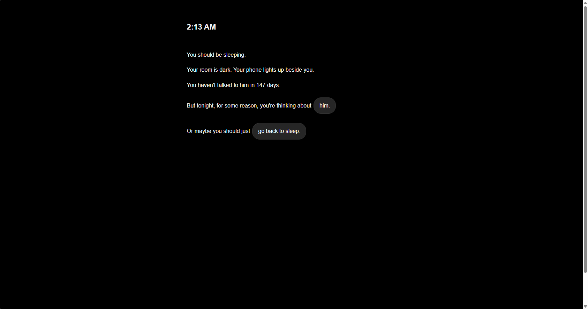

DON'T TEXT HIM. is an interactive hypertext work about memory, hesitation, and the temptation to reconnect with someone from the past. Set during a sleepless night, the work follows a series of small choices made while revisiting old messages, photographs, and memories.
Through branching links, repeated paths, and moments that return the viewer to where they began, the work explores the difficulty of moving forward while remaining attached to the past. Each click appears to offer a new choice, yet many paths lead back to the same person, turning navigation itself into a cycle of remembering and letting go.
